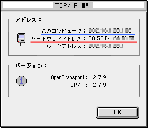
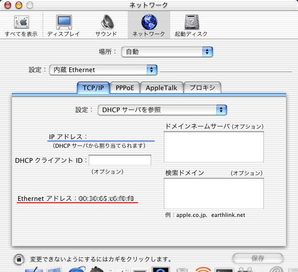
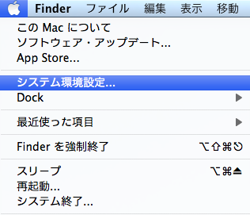
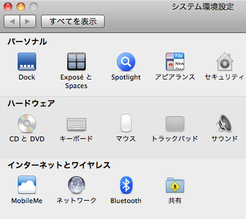

IPアドレス／MACアドレスの調べ方
｜Windows9x｜WindowsMe｜WindowsNT｜Windows2000｜WindowsXP｜Macintosh｜MacOS
X｜MacOS X (10.6, Snow Leopard)｜
MAC（イーサネット）アドレスは、ネットワークアダプタ（LANカード）に設定されている固有の番号で、OSによって Ethernet Address、アダプタアドレス、Physical
Address と言われています
[ WindowsNT/2000/XP ]
- ［スタート］－［プログラム］－［アクセサリ］－［コマンド プロンプト］を選択
※［コマンドプロンプト］が見つからないときは、 ［スタート］－［ファイル名を指定して実行］で、"cmd"と入力し実行
- ［コマンドプロンプト］画面が表示されるので
"ipconfig /all"と入力し、［ENTER］キーを押す

- ここに表示された「Ethernet adapter ローカル エリア接続」の「Physical Address」がMACアドレスです
ここに表示された「Ethernet adapter ローカル エリア接続」の「IP Address」がIPアドレスです
[ Windows9x/Me ]
- ［スタート］－［ファイル名を指定して実行］
- ［ファイル名を指定して実行］画面が表示されるので
"winipcfg"と入力し、［OK］ボタンをクリックする
- ［IP設定］画面が表示されるので、使用しているEthernetカードを選択する
※[PPP Adapter] ではありません

- ここに表示された「アダプタ アドレス」がMACアドレスです
ここに表示された「IP アドレス」がIPアドレスです
[ Macintosh ]
MacTCPがコントロールパネルにある場合
- ［アップルメニュー］－［コントロールパネル］－［MacTCP］を選択
- Ethernetアイコンを［Option］キーを押しながらクリック
- Ethernetアイコンの下にMACアドレスが表示される
TCP/IPがコントロールパネルにある場合
- ［アップルメニュー］－［コントロールパネル］－［TCP/IP］を選択
- 経由先として［Ethernet］を選択
- ［ファイル］メニューから［情報を見る］を選択

- ここに表示された「ハードウェアアドレス」がMACアドレスです
ここに表示された「このコンピュータ」がIPアドレスです
[ MacOS X ]
- ［アップルメニュー］－［システム環境設定］を選択
- ［システム環境設定］の中から［ネットワーク］をクリック
- ［設定：］で使用しているネットワークインターフェイスを指定

- ここに表示された［TCP/IP］タブにある「Ethernetアドレス」がMACアドレスです
ここに表示された「IPアドレス」がIPアドレスです
[ MacOS X (10.6, Snow Leopard)]
- ［アップルメニュー］－［システム環境設定］を選択

- ［システム環境設定］の中から［ネットワーク］をクリック

- 画面左のメニューで使用しているネットワークインターフェイスを
指定（例ではEthernetを選択）
右側に表示されたIPアドレスの箇所に表示される数字が
「IPアドレス」です

- 上記画面右下の「詳細」ボタンを押し、Ethernetタブを選びます。
「Ethernet ID」に表示されるコロン（:）で
区切られた数字がMACアドレスです